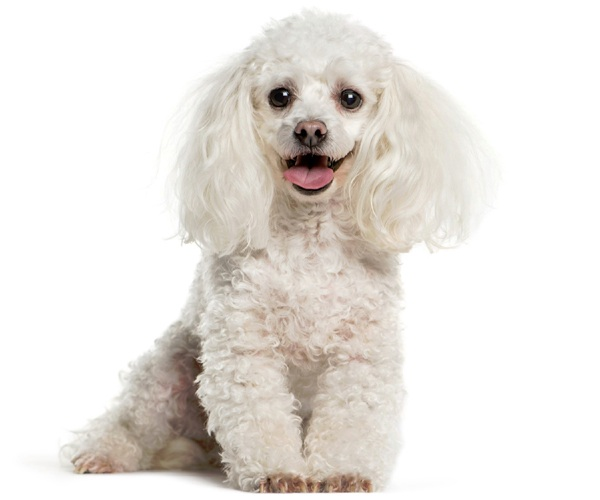
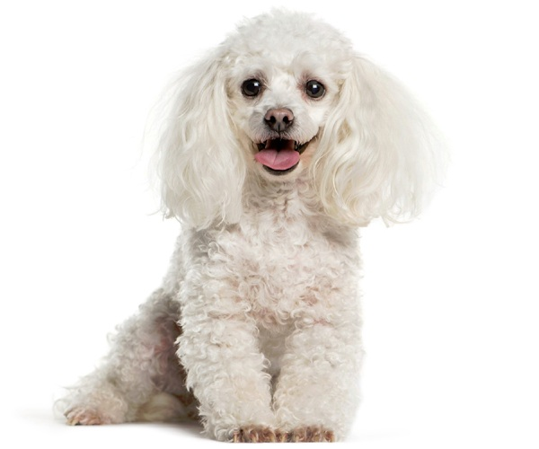

Bear Male Puppy
"Bear puppy" is not a recognized or specific species or breed. It's possible that you might be referring to a dog that looks like a bear, perhaps due to its appearance or certain features. Some breeds, such as the Chow Chow or the Tibetan Mastiff, are known for their bear-like appearance, with a thick coat and a distinctive face.
If you're referring to a dog breed or type that is often referred to as a "bear puppy" due to its bear-like appearance, there are a few breeds that may come to mind:
1. Chow Chow: Chow Chows are known for their distinctive lion-like mane and bear-like appearance. They have a stocky build, a blue-black tongue, and a thick double coat.
2. Tibetan Mastiff: This large and powerful dog breed is known for its impressive mane, which gives it a bear-like appearance. They are known for their protective instincts and were originally bred to guard livestock in the Himalayas.
3. Caucasian Shepherd Dog: These dogs are large, powerful, and have a thick double coat. They were originally bred to guard livestock in the Caucasus region and have a bear-like appearance.
4. It's important to note that these breeds are quite distinct and have unique characteristics. If you're interested in a "bear-like" dog, it's crucial to consider the specific needs, temperament, and exercise requirements of the breed to ensure a good match with your lifestyle. Additionally, always consider adopting from reputable breeders or rescue organizations.


 
